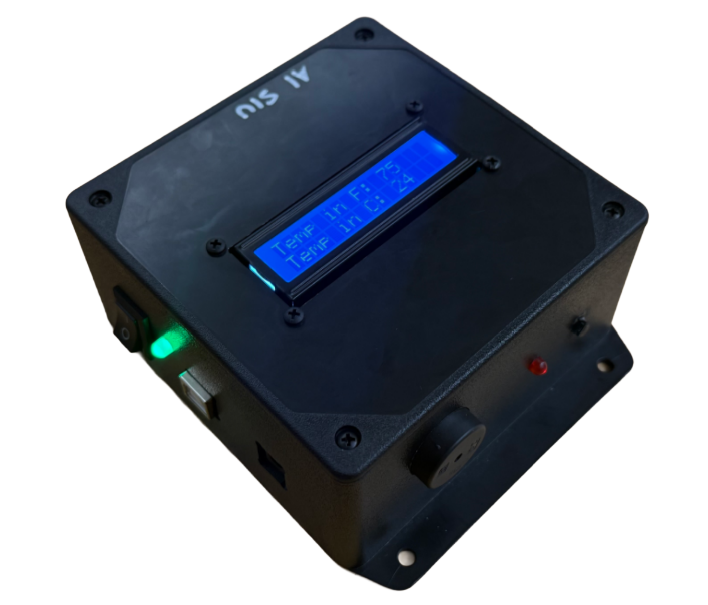

Temperature Sensor
The objective was to design a temperature-sensing device that provides audio and visual alerts when readings drift outside the 70°F - 75°F range. I programmed the Arduino Uno logic and performed all component integration, including soldering wiring for durable electrical connections. The system utilizes a TMP36 sensor for temperature sensing and an I2C LCD for real-time display, with alerts delivered via a red LED and piezo buzzer.
The device achieved its goals of accurate temperature measurement and effective notifications. However, its size and limited battery life pose challenges for portability and long-term use. Future improvements will focus on reducing size and enhancing battery efficiency. The system is valuable for applications in homes, offices, and environments requiring precise temperature control.

Techanical Report
For a detailed technical breakdown, you can view my project report linked below:
CAD and Assembly Highlight

Figure 1: Modeled assembly of all components on Onshape

Figure 2: Actual assembly of all components within enclosure